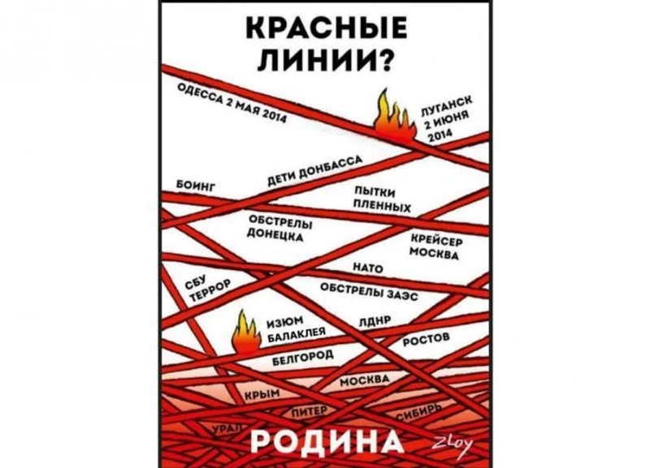
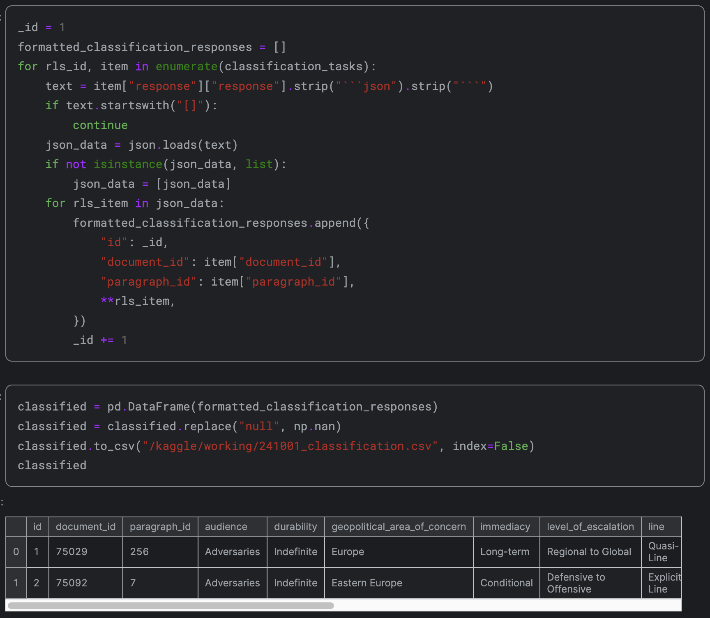
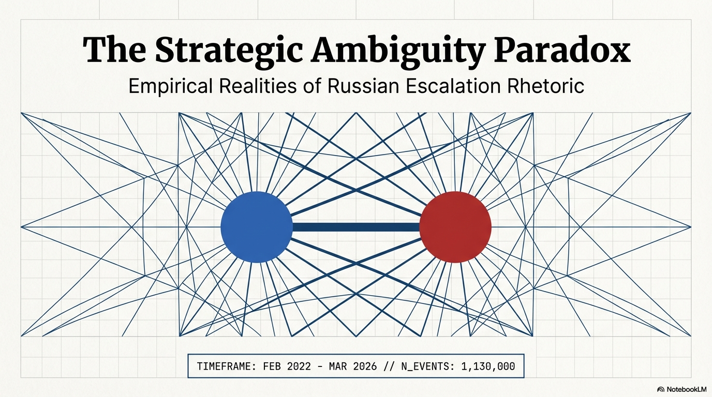

AI-Driven Strategic Analysis
Does He Mean What We Think We Heard?
Adam Stulberg & Stephan De Spiegeleire
Institut de Recherche Stratégique de l'École Militaire

"Where exactly are the red lines?"
These three categories form the basis of our AI-driven classification pipeline
If the red lines keep moving, were they ever real?
Implication: Western policy should calibrate to actions, not rhetoric

Each Russian strategic logic generates different predictions about red line behavior:
Explore the full dataset: filter by category, time period, speaker, and escalation level
Launch Red Lines Dashboard →
The pattern is clear: the louder the rhetoric, the less likely the follow-through
Calibrate responses to actions, not rhetoric. Red line statements should inform, not paralyze, Western decision-making.
Red lines ≠ actual escalation triggers. The real escalation signals are behavioral, not verbal.
Need systematic, AI-augmented approach to decode signaling at scale. Human analysis alone cannot process this volume.
This is exactly what RuBase enables: AI-driven analysis at scale across the full spectrum of Russian official discourse.
All tools are open-access and interactive
Adam Stulberg & Stephan De Spiegeleire
IRSEM Paris | March 27, 2026
Questions & Discussion